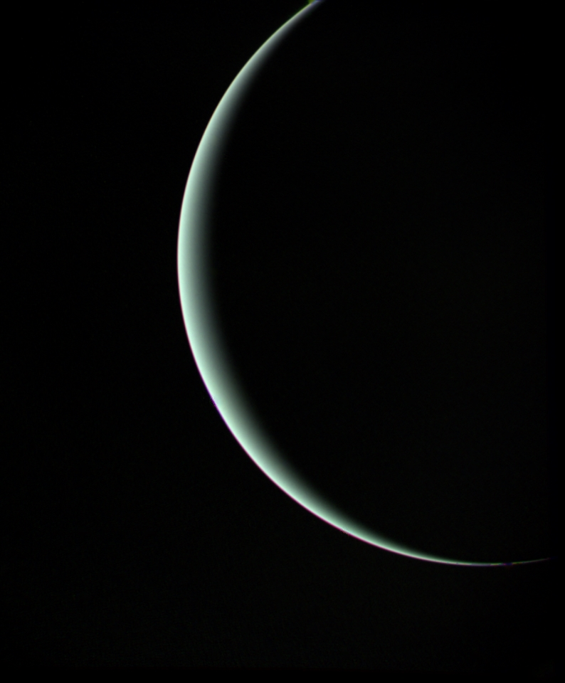

Urano
 Características físicas
Características físicas
| Masa | 8.686x10^25 kg |
| Radio | 25362 km |
| Distancia relativa al Sol | 19.19 UA |
| Tiempo en completar la órbita | 84.32 años |
| Temperatura media | -205.2ºC |
| Número de satélites conocidos | 27 |
Urano es el séptimo planeta del sistema solar, el tercero de mayor tamaño, y el cuarto más masivo. Se llama así en honor de la divinidad griega del cielo Urano (del griego antiguo Οὐρανός), el padre de Crono (Saturno) y el abuelo de Zeus (Júpiter). Aunque es detectable a simple vista en el cielo nocturno, no fue catalogado como planeta por los astrónomos de la antigüedad debido a su escasa luminosidad y a la lentitud de su órbita. Sir William Herschel anunció su descubrimiento el 13 de marzo de 1781, ampliando las fronteras entonces conocidas del sistema solar, por primera vez en la historia moderna. Urano es también el primer planeta descubierto por medio de un telescopio. Urano es similar en composición a Neptuno, y los dos tienen una composición diferente de los otros dos gigantes gaseosos (Júpiter y Saturno). Por ello, los astrónomos a veces los clasifican en una categoría diferente, los gigantes helados. La atmósfera de Urano, aunque es similar a la de Júpiter y Saturno por estar compuesta principalmente de hidrógeno y helio, contiene una proporción superior tanto de hielos como de agua, amoníaco y metano, junto con trazas de hidrocarburos. Posee la atmósfera planetaria más fría del sistema solar, con una temperatura mínima de 49 K (-224 °C). Asimismo, tiene una estructura de nubes muy compleja, acomodada por niveles, donde se cree que las nubes más bajas están compuestas de agua y las más altas de metano. En contraste, el interior de Urano se encuentra compuesto principalmente de hielo y roca.
Propiedades de la atmósferaLa composición de la atmósfera de Urano consiste principalmente en hidrógeno molecular y helio. Aunque no hay una superficie sólida bien definida en el interior de Urano, la parte más exterior de la envoltura gaseosa de Urano que es accesible por sensores remotos se llama atmósfera. La capacidad de los sensores remotos llega aproximadamente hasta unos 300 km por debajo del nivel de 1 bar (100 kPa), con una presión correspondiente de unos 100 bar (10 MPa) y una temperatura de 320 K. La corona tenue de la atmósfera se extiende notablemente por encima de dos radios planetarios desde la superficie nominal (punto con presión de 1 bar). La atmósfera de Urano se puede dividir en tres capas: la troposfera, entre altitudes de −300 y 50 km y presiones desde 100 a 0,1 bar (10 MPa a 10 kPa), la estratosfera, en altitudes entre 50 y 4000 km y presiones entre 0,1 y 10-10 bar (10 kPa a 10 μPa), y la termosfera/corona, que se extiende desde 4.000 km hasta unos 50.000 km de la superficie. No existe la mesosfera.
 Exploración espacialEn 1986, la misión Voyager 2 de la NASA visitó Urano. Esta es la única misión para investigar el planeta desde una distancia corta, y no se prevé ninguna otra sonda. Lanzada en 1977, la Voyager 2 hizo su aproximación más cercana a Urano el 24 de enero de 1986, a 81.500 kilómetros de las nubes más exteriores, antes de continuar su trayecto hacia Neptuno. Estudió la estructura y la composición química de la atmósfera, descubrió 10 nuevos satélites y también estudió el clima único del planeta, provocado por su inclinación del eje de 97,77°, e hizo la primera investigación detallada de sus cinco lunas más grandes, y estudió los nueve anillos conocidos del sistema, descubriendo dos nuevos. También estudió el campo magnético, su estructura irregular, su inclinación y su particular cola de la magnetosfera en forma de tirabuzón. El Telescopio Espacial Hubble (HST) ha observado en varias ocasiones el planeta y su sistema y ha mostrado la aparición ocasional de tormentas.